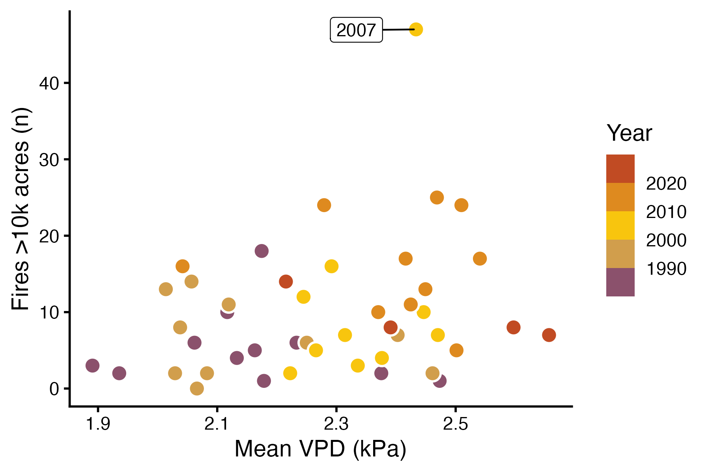
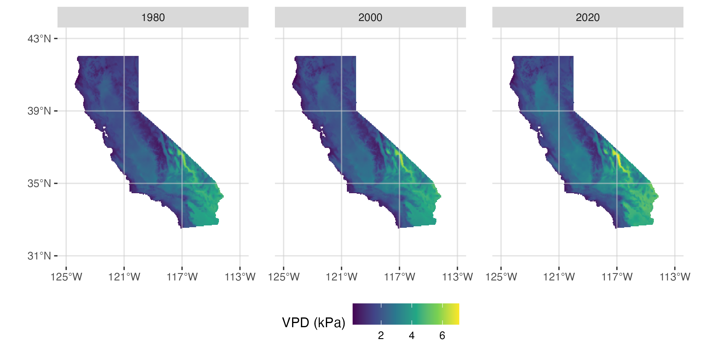
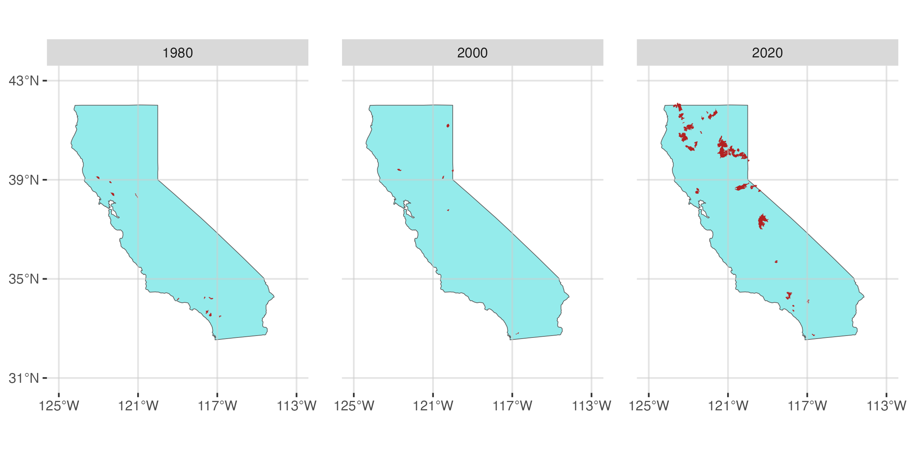
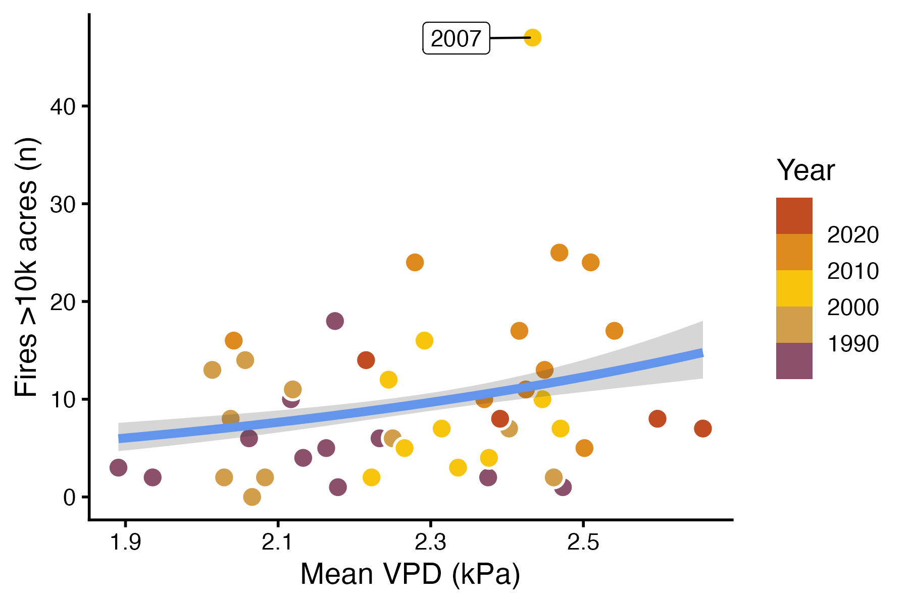

library(tidyverse)
library(terra)
library(tidyterra)
theme_set(theme_classic(12))
set.seed(123)Learning objectives
In today’s lab you will…
- Fit a Poisson regression model to count outcomes
- Visualize predictions
- Compare properly and improperly specified models
Complete sections Poisson model notation and R code and Read and explore the data before lab.
Poisson model notation and R code
In statistical notation, Poisson models take the form:
\[ \begin{align} \text{CountOutcome} &\sim Poisson(\lambda) \\ log(\lambda) &= \beta_0 + \beta_1 \text{Predictor} \end{align} \]
In R, you can fit a poisson model like this:
poisson_model <- glm(count_outcome ~ predictor,
data = my_data,
family = poisson(link = "log"))Compare Poisson and logistic regression. Which of the following change between them?
Response family
Link function
Response
Predictor
Read and explore the data
Download and unzip wildfire.zip. Read the spatial and tabular data. This includes:
A wildfire shapefile
A vapor pressure deficit (VPD) raster
A table of annual vapor pressure deficit and wildfire data
Recreate the three figures below. Yours don’t have to be exact replicates, but they should communicate the same messages.
Figure 1: A scatter plot showing the relationship between vapor pressure deficit and wildfire occurence.

Figure 2: Maps of summer VPD in 1980, 2000, and 2020.

Figure 3: Maps of wildfires in 1980, 2000, and 2020.

Fit model
Our question is:
How is the occurrence of wildfires in California associated with the previous summer’s vapor pressure deficit?
For more details about vapor pressure deficit and its relationship with fires, see Abatzoglou and Williams (2016) and Seager et al. (2015).
Fit a poisson model to see how n_fires responds to mean_vpd_kpa.
Make predictions
As with logistic regression, the coefficients of a Poisson regression model are not terribly intuitive. Once again, we will interpret our model by visualizing predictions. Refer to lab 7 for details about how to generate predictions and CIs for a generalized linear model.
Generate predictions and a CI for the number of fires in the range of VPD values in the dataset.
Plot the raw data with the predictions. Your figure should look something like the figure below.

Compare properly and improperly specified models
Seeing a scatter plot of mean VPD and the number of fires in a year, an uncritical statistics student may think to fit a linear model. But the fact that the response is a count should suggest another approach is necessary. Contrast the model summary and predictions from your Poisson model against a linear model.
- Create a new model using
lm(). - Compare the summaries of your Poisson model and the linear model.
Is the coefficient formean_vpd_kpasignificant in both models? What does that mean for your inferences? - Use predictions and components of the linear model to answer the following questions.
What is the estimate for \(\sigma\) in your linear model?
What does the linear model predict \(\mu\) is when the VPD is at the minimum value in the dataset?
What is the 95% interval for the predicted number of fires for that mean and standard deviation (hint: useqnorm())?
Why doesn’t that interval make any sense?
Based on your answers to the questions above, why is using a properly specified model important?
References
Abatzoglou, John T., and A. Park Williams. 2016. “Impact of Anthropogenic Climate Change on Wildfire Across Western US Forests.” Proceedings of the National Academy of Sciences 113 (42): 11770–75. https://doi.org/10.1073/pnas.1607171113.
Seager, Richard, Allison Hooks, A. Park Williams, Benjamin Cook, Jennifer Nakamura, and Naomi Henderson. 2015. “Climatology, Variability, and Trends in the u.s. Vapor Pressure Deficit, an Important Fire-Related Meteorological Quantity.” Journal of Applied Meteorology and Climatology 54 (6): 1121–41. https://doi.org/10.1175/jamc-d-14-0321.1.